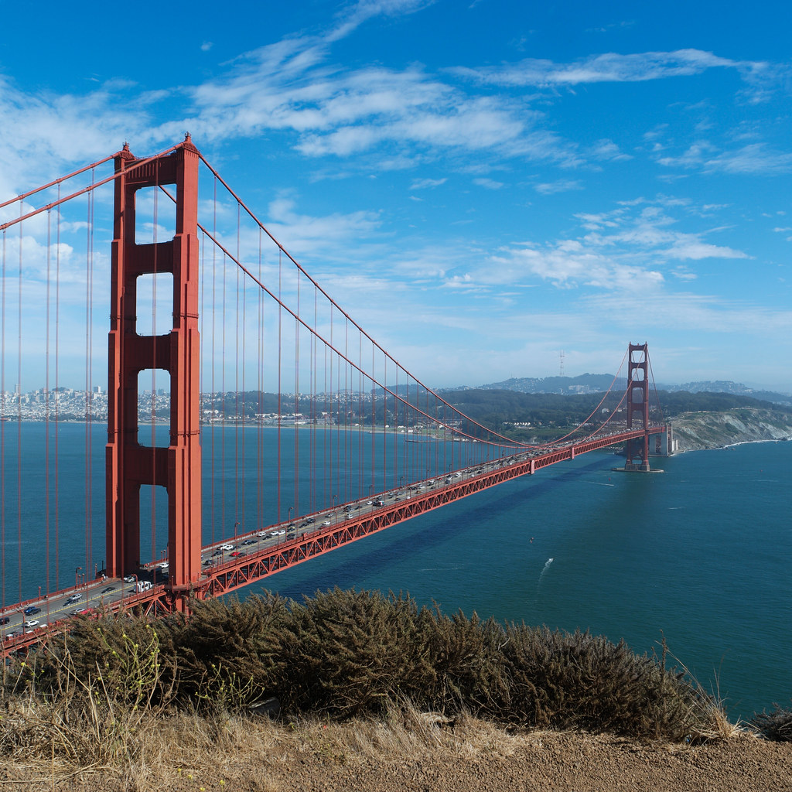

Our Staff
Our team is committed to providing you with a safe, clean environment to ensure your experience is optimal.
Please see below for more information.One-Of-A-Kind Attractions and Activities
Enjoy a beautiful location next to an abundance of things to do.
Resort History
Located along the northern California Coast, Pacific Trails Resort is recognized as one of the most photographed locations in the world. The resort was designed to overlook the San Francisco Golden Gate Bridge and the Bay Area. Pacific Trails Resort is visited by thousands of hikers, campers, photographers and nature lovers of all kinds annually.
Resort Details
Pet Policy
With lots of room to roam, don't forget your four legged friend at home. Our resort accommodates dogs with a complementary dog bed, food bowl, and mat.
Pets allowed; Pet may not be left in room unattended. Maximum pet weight: 40 lbs
Stay Green
Prioritizing the preservation of surrounding nature, is of upmost importance that Pacific Trails Resort maintains its sustainability. We are working hard to lower our carbon and water footprint every night.
General Information
Check-in: 3:00 pm
Check-out: 1:00 pm
ParkingParking: On Site
$39 daily
$5 hourly
Accessibility Information
Service Animals Welcome
Accessible entrances, ramps available to yurts
Please contact front desk for supportOur staff is on call 24 hours a day. Our concierge is always available to help you make the very best of your stay with us. From booking kayaks to finding the best hiking trail for your family, our team does it all.